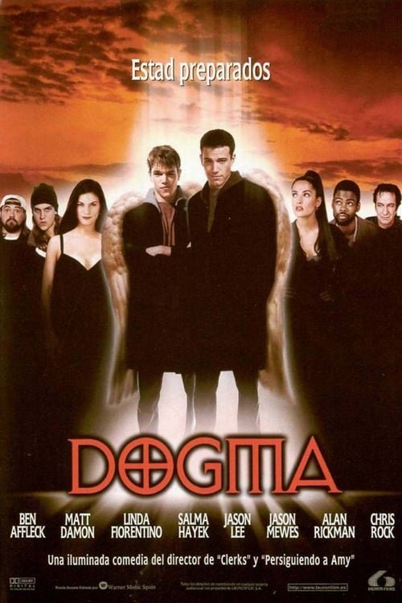

Dogma (1999)
Sinopsis Rápida
Dos ángeles caídos buscan anular la ley divina, y solo una joven con una fuerte fe puede evitar el fin del mundo en esta irreverente y desternillante comedia.
Sinopsis Detallada
Dogma, la obra maestra de Kevin Smith, presenta a dos ángeles caídos, expulsados del paraíso por sus pecados, que buscan explotar una laguna celestial para regresar. Su plan amenaza con destruir el universo. Afortunadamente, una trabajadora de una clínica de abortos con una crisis de fe, y un grupo de personajes extravagantes, se interponen en su camino. La película es una mezcla explosiva de comedia irreverente, debates religiosos y un humor negro que te dejará sin aliento. Prepárate para una montaña rusa de risas y reflexiones.
¿Por qué tenés que verla?
- Una comedia inteligente y subversiva que no se guarda nada.
- El estilo característico de Kevin Smith, con diálogos ágiles y personajes memorables.
- Su impacto en el cine independiente y su estatus de película de culto.
- Excelente reparto con actuaciones memorables.
Idea Extra
Análisis del simbolismo religioso en Dogma: una mirada a la iconografía y las referencias bíblicas utilizadas para crear un relato cómico y crítico sobre la fe.
{{CONTENIDO_RELACIONADO}}